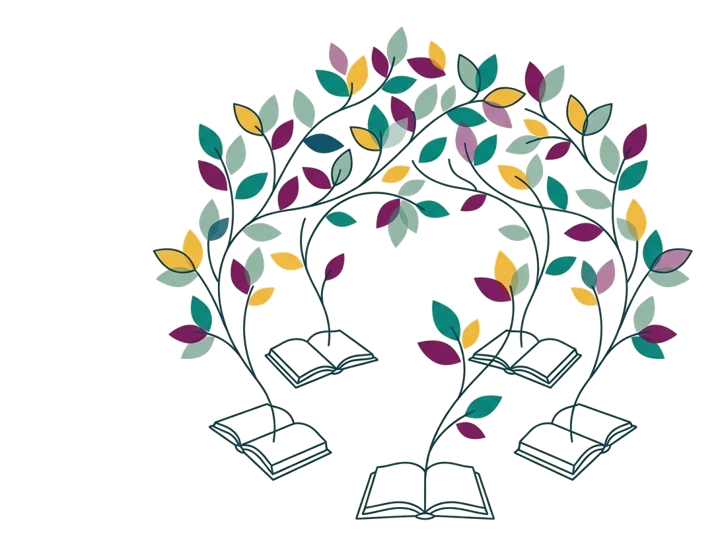

Forgiveness Groups
Doing this work alongside other people changes it
A Forgiveness Group is six to twelve people who each do the REACH Forgiveness Workbook lessons in their own time, then meet to talk about them. Each meeting is guided by a short video, so you don’t need to be a therapist or an expert to facilitate one.
What happens in a Forgiveness Group

Create your facilitator account Create a group I have a group code Forgiveness Group Basics
Each person is on their own forgiveness journey, and not everyone will reach full emotional forgiveness. That’s okay. If you ever need to pause or stop, you should. The guidelines below carry the rest, and they hold for every group.
Forgiveness Group Basics
What everyone in a group should know, whether you lead it or join it. None of it needs training.
Choose your format
Three sessions using the REACH Forgiveness Workbook, or six using the church edition.
Gather 6–12 people
A church small group, a class, a workplace team, or friends.
Everyone gets the workbook
Free PDF or print. Everyone does their lessons on their own, before each meeting.
Press play, then talk
Watch the short video together, then discuss what it raises. The video carries the structure so you don’t have to.
A facilitator guide and a short film on running a session are in production and will appear in your account. Coming with the videos
The two versions
- Each version is a set of films.At each meeting the facilitator plays that session’s video — about ten minutes of teaching and a guided activity — and the group talks afterwards.
- Choose the one that matches your workbook.Three sessions for the REACH Forgiveness Workbook; six for the edition Adapted for Churches.
- Both use the tested workbook.The evidence attaches to the workbook, and both versions inherit it.
Choose one to see it step by step.
Create your group
You’ll be the facilitator. That just means gathering your people and pressing play. The video does the guiding, and you take part like everyone else.
Free account
Sign in first — everything you need is in there
Your account holds your group code, the session videos, the facilitator guide, and the interactive workbook. It is free, it takes a minute, and you can delete it whenever you like.
Not ready for an account? The workbook itself never needs one — download it here and come back when you are.
Already in a group?
Your facilitator gives you a code. It keeps your place and lets you rewatch the videos.
Connect with other practitioners
Monthly · Free
Forgiveness Community of Practice
Learn about forgiveness research and implementation best practice, and connect with others spreading forgiveness. First Friday of every month, 12pm ET, on Zoom.
RegisterUpcoming events
Forgiveness Group Guidelines
These eight hold for every group, whichever version you use. Read them out at your first meeting.